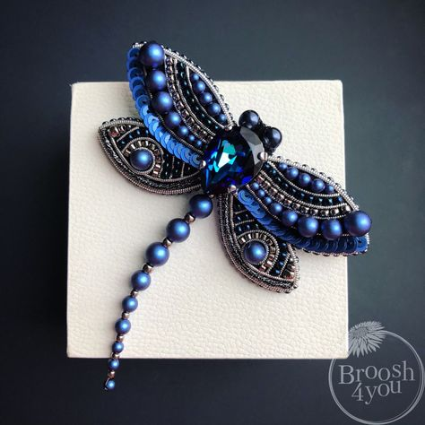
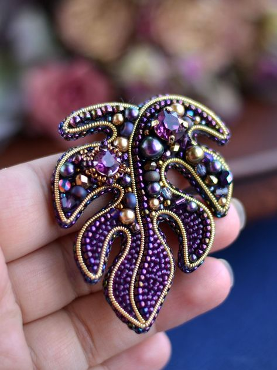
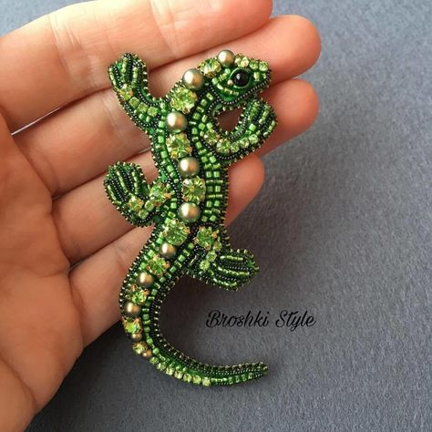
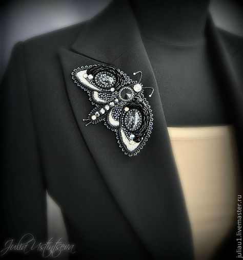
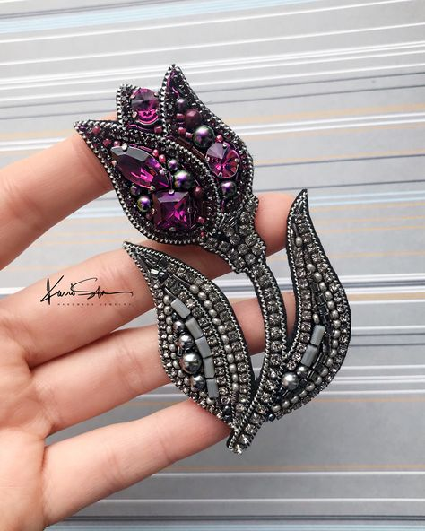
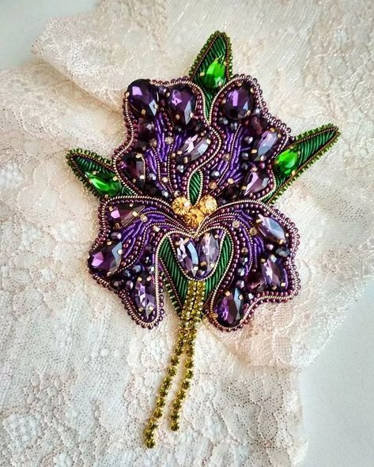

Идеи для создания брошей
Очень часто я вдохновляюсь идеями других мастеров. Не всегда получается как задумано, так как всё зависит от материалов и опыта. Но я стараюсь совершенствовать свои навыки и стремлюсь к лучшему. Ниже можно посмотреть примеры работ, которые я считаю эталоном.
     